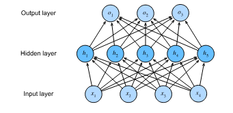
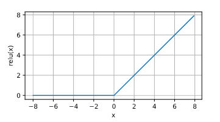
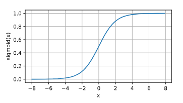

Chapter3 - Multilayer Perceptrons
Table of Contents
- 1. Multilayer Perceptrons
- 2. Forward Propogation
- 3. Back Propogation
- 4. Training a Neural Network
- 5. Vanishing and Exploding Gradients
- 6. Weight Initialization
- 7. Symmetry
- 8. Generalization in Deep Learning
- 9. Deep Networks: Parametric or Nonparametric?
- 10. Regularization Techniques for Deep Networks
- 11. Key Takeaways
- 12. Dropout
1. Multilayer Perceptrons
1.1. Hidden Layers

- The above architecture is called as multilayer perceptron, MLP. The above hidden layer has 5 hidden units.
- The number of layers in this MLP is
two. We will ignore input layers as an actual layer. - We will denote input dataset as a matrix X ∈ Rnxd with n inputs and d features of every input.
- For a one hidden layer MLP with h hidden units, H ∈ Rnxh and the outputs of hidden layer, are called
hidden representations. - Hidden layer weigths, W1 ∈ Rdxh and biases, b1 ∈ R1xh and output layer weights W2 ∈ Rhxq and biases, b2 ∈ R1xq.
The outputs of one hidden layer MLP is O ∈ Rnxq
H = XW1 + b1 O = HW2 + b2
1.2. Linear to Non-Linear
- The above H and O can be collapsed into one single layer and the MLP will be again linear. This is a problem because we need non-linear
models to represent complex relationships.
- To solve this, we use a non-linear activation function which will be applied to every hidden unit.
- A popular choice is ReLU, 𝜎(x) = max(0,x).
The output of the activation functions are called
activations.H = 𝜎(XW1 + b1) O = HW2 + b2
1.3. Common Activation Functions
- Activation functions determine whether a neuron should “fire” or activate based on its input. They introduce non-linearity into the network.
1.3.1. ReLU function

- Rectified Linear Unit
- ReLU(x) = max(0,x)
- Variants of ReLU:
- Why do we need variants?
- Dying ReLU problem: One potential issue with ReLU is the “dying ReLU” problem, where neurons can become permanently inactive if their input consistently becomes negative. This is because the gradient is zero for negative inputs, preventing any weight updates.
- pReLU(x) = max(0, x) + α min(0, x)
- Why do we need variants?
- The ReLU is non-differentiable at x=0, because there is a jump here. Practically, getting x as zero is very very low. Even if we get, we just assume derivative of ReLU at x=0 is 0.
1.3.2. Sigmoid function
- It is also called
squashing function. - It transforms values from R to (0,1).
- (-inf,inf) -> (0,1)
- sigmoid(x) = (1)/(1+e-x)

2. Forward Propogation
- It refers to the calculation and storage of intermediate variables including outputs for a neural network in order from input to output layer.
- Let’s assume a simple neural network with no bias term and one hidden layer.
- Input Layer (X) –> Hidden Layer (h) –> Output Layer (o)
- Step by Step breakdown:
- z = W(1) * X => After, we get the input features from the input layer. We will multiply the input features by weights W(1) on the way to hidden layer (h). This is a linear transformation. If our input x has three features, (e.g., height, weight, age), and the hidden layer has 4 neurons. W(1) will be a 4x3 matrix. Each row of W(1) defines defines the weights for one neuron in the hidden layer.
- h = 𝜙(z) => After, we get z which in this example, is a 4x1 vector. We apply an activation function to the vector. This squishes the data space. For example, ReLU will make any negative number as zero.
- o = W(2) * h => We will again do linear transformation here. Since, in this example, h has 4 elements and output has 2 neurons, the W(2) matrix will be 2x4. The weights in W(2) determine how much each hidden neuron contributes to each output.
- L = l(o,y) => After, getting the output, we will compare it with the true label y.
- Regularization => Generally, instead of using just loss, we will add penalty to the loss called l2. J = L + s where, L = l(o,y) s = (λ/2) * (||W(1)||² + ||W(2)||²) -> l2 norm
3. Back Propogation
- It refers to the method of calculating the gradient of neural network parameters.
- Refer to page 181 on d2l.ai (It requires manual differentiation which is hard to write in emacs)
4. Training a Neural Network
- Initialization
- Start by initializing W(1) and W(2).
- Forward Propogation
- z = W(1) * X
- h = phi(z)
- o = W(2) * h
- L = (o-y)2
- J = L + s
- Backpropogation (again, refer the book for exactly how it came pg. 182)
- dJ/do = 2(0-y)
- dJ/dW(2) = dJ/do * h + λW(2)
- dJ/dW(1) = dJ/dz * X + λW(1)
- Weight update
- W(1) = W(1) - n * dJ/dW(1)
- W(2) = W(2) - n * dJ/dW(2)
5. Vanishing and Exploding Gradients
5.1. Definition
These are problems encountered during the training of deep neural networks where gradients become either extremely small (vanishing) or extremely large (exploding) during backpropagation.
5.2. Cause
- Chain Rule: Backpropagation uses the chain rule to calculate gradients, involving the multiplication of many gradient terms across layers.
- Vanishing: If these gradient terms are consistently less than 1 (e.g., due to the saturation of activation functions like sigmoid or tanh), their product can become exponentially small as it propagates through many layers. The derivative of the sigmoid function is at most 0.25. If this keeps on multiplying, it will vanish. The provided example with the sigmoid activation function demonstrates this. The sigmoid’s derivative (gradient) is close to zero when inputs are very large or very small. When used in a deep network, gradients can vanish quickly.
- Exploding: If the gradient terms are consistently greater than 1 (e.g., due to large initial weights or the nature of certain activation functions in deep networks), their product can become exponentially large. If random matrix’s values are high, there is a high chance that their multiplication will be high as well. The provided Python code with matrix multiplication illustrates this. Initializing with random matrices and repeatedly multiplying them leads to extremely large values in the final matrix.
5.3. Mathematical Illustration
- Consider a network with L layers. The gradient of the loss with respect to the weights in an earlier layer l involves a product of terms: ∂Loss/∂W(l) ∝ Π(i=l to L-1) ∂h(i+1)/∂h(i) * ∂h(l)/∂W(l)
- If ||∂h(i+1)/∂h(i)|| < 1 for many i, the gradient will vanish.
- If ||∂h(i+1)/∂h(i)|| > 1 for many i, the gradient will explode.
5.4. Consequences
- Vanishing:
- Slow or stalled learning, especially in earlier layers.
- Weights in earlier layers may not update effectively.
- Exploding:
- Unstable training.
- Large weight updates, leading to oscillations or divergence.
- NaN or infinity values in weights.
5.5. Mitigation
- Proper weight initialization (see below).
- Gradient clipping (limiting the magnitude of gradients).
- Using activation functions less prone to saturation (e.g., ReLU).
- Batch normalization.
- LSTM or GRU architectures for recurrent networks.
6. Weight Initialization
6.1. Importance
The initial values of weights significantly influence the training dynamics and convergence of neural networks.
6.2. Goals
- Prevent vanishing or exploding gradients.
- Break symmetry (see below).
- Promote faster convergence.
6.3. Methods
- Random Initialization: Weights are initialized with small random values, typically drawn from a Gaussian or uniform distribution.
- Xavier/Glorot Initialization:
- Rationale: Scales the initial weights based on the number of input and output connections of a layer to maintain a similar variance of activations and gradients across layers.
- Formula (Gaussian): Weights are drawn from a Gaussian distribution with mean 0 and variance σ² = 2 / (nin + nout), where nin is the number of input units and nout is the number of output units.
- Formula (Uniform): Weights are drawn from a uniform distribution in the range [-√(6 / (nin + nout)), √(6 / (nin + nout))].
- He Initialization:
- Rationale: Similar to Xavier but specifically designed for ReLU activation functions.
- Formula (Gaussian): Variance σ² = 2 / nin
6.4. Considerations
- The choice of initialization method may depend on the activation function used.
- Other specialized initialization techniques exist for different network architectures.
7. Symmetry
7.1. Definition
In the context of neural networks, symmetry refers to a situation where multiple neurons in a layer have identical weights and biases.
7.2. Problem
- Redundancy: Symmetric neurons compute the same output and have identical gradients during backpropagation.
- Limited Expressive Power: The network effectively behaves as if it has fewer neurons, as those with identical weights do not learn unique features.
- Inability to Learn: Gradient-based optimization methods may fail to break this symmetry, preventing the network from learning effectively.
7.3. Mathematical Explanation
- Consider two neurons i and j in a layer with identical weights (Wi = Wj) and biases (bi = bj).
- Their outputs will be the same for any input: oi = oj.
- During backpropagation, their gradients will also be identical: ∂Loss/∂Wi = ∂Loss/∂Wj.
- Consequently, their weights will be updated identically in each iteration, maintaining the symmetry.
7.4. Solution
- Random Initialization: Initializing weights with small random values breaks the symmetry, ensuring that each neuron starts in a different state and learns distinct features.
- Dropout: Although not directly related to initialization, dropout can further help break symmetry during training by randomly deactivating neurons in each iteration.
8. Generalization in Deep Learning
8.1. Key Idea: Deep learning generalization is complex and not fully understood, unlike simpler models.
8.1.1. Optimization vs. Generalization
- Goal of ML is generalization: perform well on unseen data.
- Optimization helps fit training data, but generalization is the real challenge.
- Deep learning’s generalization ability is still not fully explained theoretically.
- In practice, generalization is the primary focus as models often fit training data perfectly.
8.1.2. Overfitting and Regularization
- No Free Lunch Theorem: No single learning algorithm is universally superior; performance depends on data distribution.
- Inductive Biases: Models have inherent preferences for certain solutions based on their design (e.g., MLPs favor compositions of functions).
- Generalization Gap: Difference in performance between training and test data. Large gap = overfitting.
- Classical Overfitting View: Overfitting due to model complexity; solutions involve reducing features/parameters or limiting parameter size.
8.1.3. Deep Learning’s Counterintuitive Behavior
- Deep models often achieve zero training error even on large datasets.
- All models can overfit initially.
- Increasing model expressiveness (e.g., adding layers) can sometimes reduce overfitting.
- Double Descent: Model complexity vs. generalization can be non-monotonic (hurt, help, hurt again).
- Practitioners use various techniques (regularization, architectural choices) to combat overfitting.
8.1.4. Failure of Classical Learning Theory
- Traditional complexity measures (VC dimension, Rademacher complexity) fail to explain deep network generalization.
- These models can fit arbitrary labels, making classical theories inadequate.
9. Deep Networks: Parametric or Nonparametric?
9.0.1. Inspiration from Nonparametrics
- Deep networks, despite having many parameters, often behave like nonparametric models.
- Nonparametric models’ complexity grows with the amount of data.
9.0.2. k-Nearest Neighbors (k-NN) as Nonparametric Example
- Training: Memorizes the entire training dataset.
- Prediction: Finds ’k’ nearest neighbors in training data for a new input.
- Complexity: Grows with more training data.
- 1-NN: Achieves zero training error but can still generalize (be “consistent”).
- Distance Function: Crucial choice; different functions encode different assumptions, leading to different predictions.
9.0.3. Deep Networks’ Nonparametric Behavior
- Over-parameterization: More parameters than needed to memorize training data.
- Interpolation: Can fit training data perfectly, like 1-NN.
- Neural Tangent Kernel: Research shows a link between wide, randomly initialized networks and kernel methods (nonparametric).
10. Regularization Techniques for Deep Networks
10.0.1. Early Stopping
- Halt training before perfect memorization of training data, especially with noisy labels.
- Motivation:
- Networks fit clean data before noisy data.
- Stopping early can improve generalization.
- Saves time and resources.
- How it works:
- Monitor validation error.
- Stop when validation error stops improving (using a “patience” criterion).
- When useful:
- Noisy or inherently variable labels.
- Less benefit with perfectly separable, noiseless data.
10.0.2. Classical Regularization (Weight Decay)
- Penalize large weights (L1/L2 regularization) to prevent overfitting.
- Limited effectiveness alone: Often not enough to prevent memorization in deep learning.
- Combined with early stopping: May guide the model towards a good solution early in training.
- Inductive biases: Might work by introducing beneficial biases rather than strictly limiting capacity.
10.0.3. Dropout
- Randomly disable neurons during training.
- Prevents reliance on single neurons.
- Another popular regularization technique in deep learning.
11. Key Takeaways
- Deep learning generalization is a complex and active research area.
- Classical overfitting concepts don’t fully apply.
- Nonparametric perspective might offer a better framework for understanding.
- Early stopping is crucial, especially with noisy data.
- Classical regularization is used differently and often combined with early stopping.
- Effectiveness might be due to inductive biases rather than capacity limits.
12. Dropout
12.1. Core Idea**
- Dropout is a regularization technique to prevent overfitting in neural networks.
- It works by randomly “dropping out” (zeroing) a fraction of neurons in a layer during each training iteration.
- This forces the network to learn more robust features that are not overly dependent on any single neuron.
12.2. Motivation**
- We want models that generalize well to unseen data (good test performance).
- Classical generalization theory suggests simpler models generalize better.
- Simplicity can be achieved through:
- Fewer dimensions (e.g., lower-order polynomial basis functions in linear models).
- Smaller parameter norms (e.g., L2 regularization/weight decay).
- Smoothness: The function shouldn’t be overly sensitive to small input changes.
- Bishop (1995) showed that training with input noise is equivalent to Tikhonov regularization, linking smoothness and resilience to input perturbations.
- Srivastava et al. (2014) extended this idea to internal layers of a network using dropout.
12.3. How Dropout Works**
- During each training iteration:
- Select a random subset of neurons in a layer to “drop out” (set their activation to 0).
- Calculate the next layer’s activations based on the remaining neurons.
- Scale the activations of the remaining neurons to compensate for the dropped ones. (keep expectation the same)
- Dropout probability (p): The probability that a neuron is dropped out.
Equation (5.6.1):
h' = { 0 with probability p { h / (1-p) otherwise- This maintains the expected value of the activation: E[h’] = h.
12.4. Effects of Dropout**
- Prevents co-adaptation: Layers don’t become overly reliant on specific patterns of activations in the previous layer.
- Gradient vanishes for dropped neurons during backpropagation.
- Effectively trains an ensemble of networks with different subsets of neurons.
- Output layer cannot depend too much on any single hidden unit.
12.5. Dropout at Test Time**
- Typically disabled during testing.
- No neurons are dropped, and no scaling is needed.
- Exception: Can be used as a heuristic for estimating prediction uncertainty.
- Agreement across multiple dropout masks suggests higher confidence.